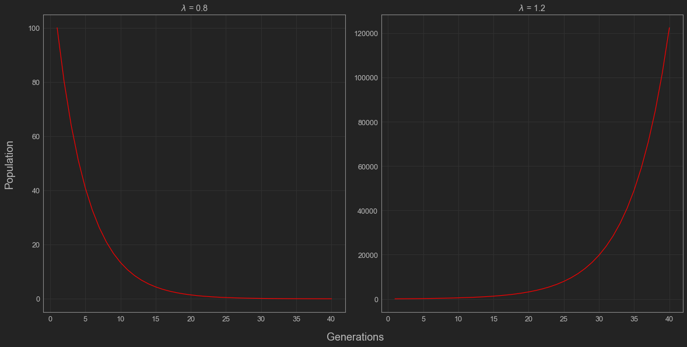
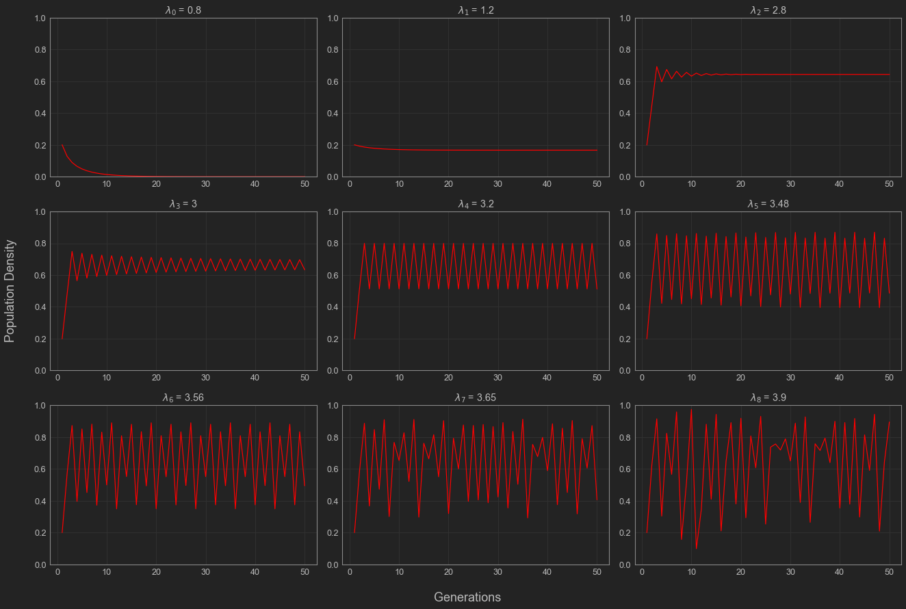
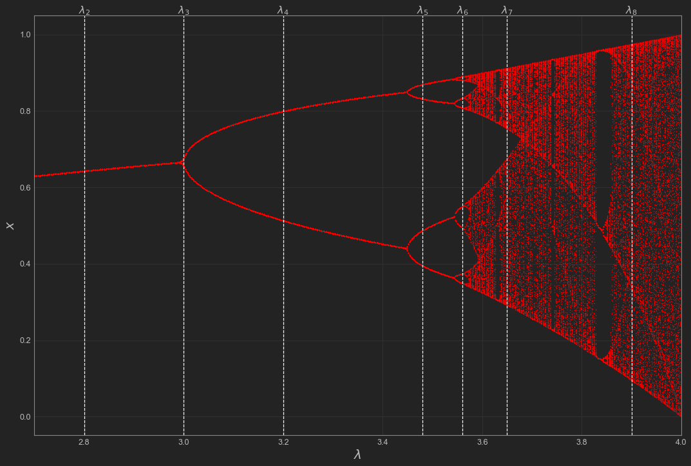
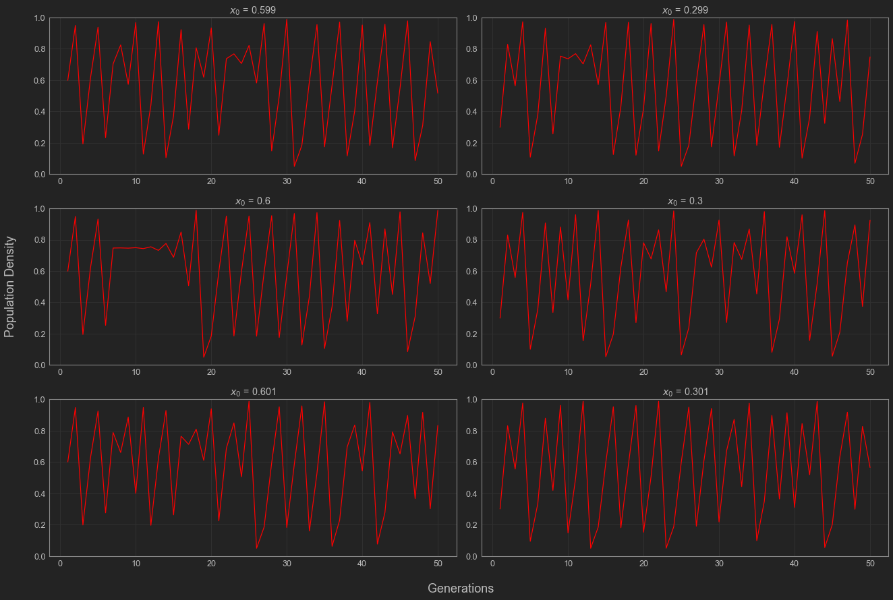
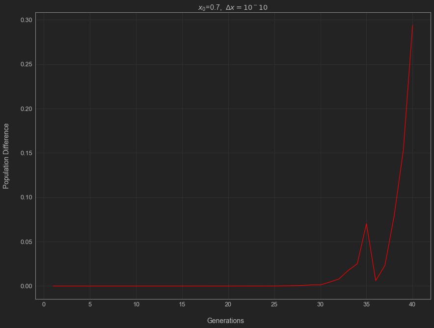
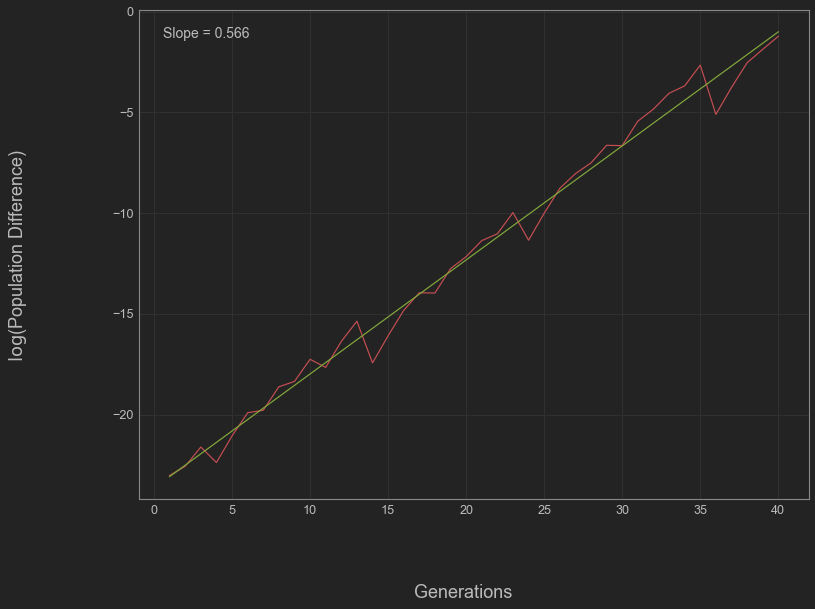

If we’re interested in taking a first step towards chaos, the usual starting example is the logistic map. A thousand blog posts have been written about this map and chaos in general. Instead of throwing the equation in your face, I’ll try and show this chaos begins to appear in a very simple system. First, let’s start with the simplest possible model for population size. \(\newcommand{\abs}[1]{ \left| #1 \right| }\)
The Exponential Map
What if every person had on average 1.2 kids every generation? Starting with \(x_0\) people, the new population would be \(1.2 x_0\) the next generation. After two generations, it’d be \((1.2)^2 x_0\) and it’d continue like this for the following generations. We have some growth every generation and it multiplies our current population over and over again. If we want to be more general about this, we can say that the population has a growth parameter \(\lambda\). Then we’d write our population growth each generation as a function
\[ \begin{equation} f(x) = \lambda x. \end{equation} \]
In general, this function is called the exponential map and tells us how big the next generation’s population will be given the population grows by a factor of \(\lambda\). If we keep applying it over and over, we can get the population size several generations in the future. Mathematically, we’d write this as a dynamical system. If we have a starting value or /initial condition \(x_0\). Therefore, the population after 1 generation would be \(f^1(x_0) = \lambda x_0\), after two it would be \(f^2(x_0) = \lambda^2x_0\). For simplicity’s sake, we’d say that after \(n\) generations the population is
\[ \begin{equation} f^n(x_0)=\lambda^nx_0. \end{equation} \]
We can describe the dynamics of the exponential map by looking at all the population values for each generation
\[\begin{equation} x_0, f^1(x_0), f^2(x_0), f^3(x_0), \dotsc \end{equation} \]
From this, we can begin to see that the dynamics will depend on the value of \(\lambda\) we pick. When dealing with the exponential map, we can have two kinds of outcomes. The population will either die out (\(0<\lambda < 1\)) eventually or it will skyrocket and go to infinity (\(\lambda >1\)). If \(\lambda < 1\), then \(\lambda \cdot \lambda < \lambda \cdot 1\), so the population shrinks and the population will die out over time. On the other hand, if \(\lambda > 1\), then \(\lambda \cdot \lambda > \lambda \cdot 1\) so the population grows and continues to grow every generation.
In the case we were discussing before, \(\lambda\) would be 1.2 kids per person. Each generation, the population would steadily increase and after 20 generations, we’d have over 30,00 people. After 100, we’d have nearly 80 billion!
| Generation: | 1 | 2 | 3 | 4 | 5 | 6 |
|---|---|---|---|---|---|---|
| Population: | 1000 | 1200 | 1440 | 1720 | 2070 | 2490 |

This isn’t very realistic because it assumes the population can get infinitely large. When it comes to human population, this probably isn’t realistic. Population growth has to begin to slow down at some point. In this case, there must be some limiting factor to our population growth.
Instead of doing this by hand each time, we could also use a compute program to simulate these dynamics. We can use the following code to simulate these dynamics. Here’s an example program I wrote below.
def exponential(x_0 = 100, lambd = 1, max_n = 10):
x = []
x = np.append(x, x_0)
for n in range(max_n - 1):
x = np.append(x, lambd*x[n])
return xLogistic Map
What happens to our model if we assume that resources are somehow limited? As more people appear, it’ll become harder for everyone to meet their individual needs to survive . In order to model this, we need the population change to depend not only on a growth rate, but also how close we are to some theoretical maximum population size. If we say \(x\) is the current fraction of this maximum population size, we might change our growth rate from \(\lambda\) to \(\lambda (1-x)\) to allow for the growth rate to decrease as the population increases. Therefore, our model would become
\[ \begin{equation} f(x) = \lambda(1-x) x. \end{equation} \]
This is called the logistic map. Strictly speaking, it is a family of maps depending on different values of \(\lambda\). In order to see what happens to the population each generation, we want to analyze the dynamics like in the last example. In the last example, we were able to write a formula for the dynamics and saw the population would either blow up to infinity or die out eventually. This time around we can’t easily write an explicit equation for the dynamics. One usual tool in cases like these where we can’t easily write down a solution is simulation. We can rely on code to help us visualize the population dynamics over time. Here’s the program I use to the simulate the logistic map in the figures below.
## Logistic Map
def logistic_map(x_0 = 0.4, lambd = 1.2, max_n = 500):
x = []
x = np.append(x, x_0)
for n in range(max_n - 1):
x_new = lambd*x[n]*(1-x[n])
x = np.append(x, x_new)
return(x)Despite having the tools to simulate this, let’s try to understand this at an intuitive level first since all good code needs a sanity check. We made this model to account for limits on a population and picked a decreasing growth rate, so you might expect that the dynamics will reflect this and keep the population in check. Even though this works on an intuitive level, we should still try and observe it mathematically. Following this intuition, the first thing we should check is whether our population will stabilize as we expect. Much like in the case of the exponential map, this all depends on the value of the growth parameter \(\lambda\).
It’s actually not that hard to prove that there is some point of stability where the population will stay the same from year to year. In mathematical terms, this is called a fixed point. From our point of view, we say the population \(x_\star\) is fixed if \(f(x_\star) = x_\star\).
Proposition: Every continuous function \(f\) takes points from \([0,1]\) to \([0,1]\) has a fixed point.
Proof. Let’s define a new function \(D(x) = f(x) - x\). Since \(f(0)\) must be in \([0,1]\), it must be greater than or equal to 0. Therefore, we know \[D(0) = f(0) - 0 \geq 0.\] Similarly, \(f(1)\) is in \([0,1]\), so we know that \(D(1)<0\). Since \(f\) is continuous, the intermediate value theorem guarantees us that there is a fixed point \(x_\star\).
In order for this to hold for the logistic map, we need to make sure that \(f(x)\) stays between 0 and 1 which means that \(\lambda\) must be between 0 and 4. Under these assumptions, we can solve for our fixed point(s) directly. One obvious fixed point is \(x_\star = 0\), but let’s see if there are any others. If \(x_\star\) is a non-zero fixed point of \(f(x)\), then we need \(\lambda(1-x)x = x\). Dividing by \(x\), we get \(\lambda(1-x) = 1\). Multiplying this out, we get \(\lambda - 1 = \lambda x\) which gives shows that our equilibrium value must be
\[ \begin{equation} x_\star = 1 - \frac{1}{\lambda}. \end{equation} \]
Notice that in order for this fixed point to be greater than 0, we need \(\lambda\) to be greater than 1. This makes sense since otherwise we can expect the population to die out like in the exponential case.
We know it’s possible for our population to stabilize, but when will it? We can use the derivative of this function to help us discern whether this point is attracting i.e. whether initial conditions near it will approach this fixed point.
Proposition: If \(x_\star\) is a fixed point and \(\abs{ f'(x_\star)} < 1\), then it is an attractive fixed point.
Proof. In calculus, we learn that the derivative is given by
\[ \begin{equation} f'(x_\star) = \lim\limits_{n\to \infty} \frac{f(x) -f(x_\star)}{x-x_\star}. \end{equation} \]
This tells us that in some neighborhood of \(x_\star\), \(f\) is a contraction. In technical terms, there exists some \(\delta > 0\) such that for \((x_\star - \delta, x_\star + \delta)\),
\[ \begin{equation} \abs{f(x) - f(x_\star)} < \abs{ x-x_{\star}}. \end{equation} \]
This means that if we pick a initial condition \(x_0\) that is close enough to \(x_\star\), then \(x_0\) will get closer to \(x_star\) after each iteration or generation in our case.
This makes our problem much easier. If we want to find which \(\lambda\) values have attracting fixed points, then we just check to see when \(\abs{ f'(x_\star)} < 1\). Taking the derivative of \(f\), we get \(f'(x) = \lambda(1-2x)\). Plugging in our \(x_\star\) value, we see that
\[ \begin{equation} f'\left(1- \frac{1}{\lambda}\right) = \lambda\left( 1 - 2\left(1- \frac{1}{\lambda}\right)\right) = \lambda\left(\frac{2}{\lambda} - 1\right) = 2 - \lambda. \end{equation} \]
This tells us that the fixed point is attractive for \(\lambda\) between 1 and 2 or between 2 and 3. Now that we’ve confirmed the existence of a fixed point and know a bit about the dynamics of this system, let’s do some simulations to see what happens to our populations over several generations.

As expected from the math we did above, \(\lambda\) values in \((1,2)\) and \((2,3)\) approach the fixed point \(1 - \frac{1}{\lambda}\). Relating this back to our original example, this tells us that having limited resources will cause our population to peak and stabilize. We can see this in the plot above, where \(\lambda_2 = 1.2\). Looking into the rest of the cases, we can also notice that for \(\lambda < 1\), the population dies out which makes sense biologically. A population that can’t successfully replenish itself is going to go extinct. What is interesting here are the values of \(\lambda\) that are greater than 3. The population appears to be oscillating periodically for \(\lambda_4 = 3.2\), \(\lambda_5 = 3.48\), and possibly for \(\lambda = 3.56\) which corresponds to the population constantly overshooting its threshold and falling back down. When we get to even higher \(\lambda\) values, these population dynamics seems to fluctuate like crazy, significantly departing from the cases we looked at before.
Bifurcations
Let’s try and visualize this behavior as \(\lambda\) changes with a bifurcation diagram. A bifurcation diagram helps give us an idea about where our system will eventually end up. We take several trajectories for different \(\lambda\) values and plot these \(\lambda\) values against where the corresponding population ends up going in the long term. This tells us how the asymptotic behavior of our system changes alongside our growth parameter \(\lambda\).
## Values of lambda to sweep over
lambda_range = np.linspace(2, 4, 1000)
tail = 200
lambd_seq = []
eq_seq = []
## Run the model for 1000 generations and take at the last 200 values.
for lambd in lambda_range:
out = logistic_map(lambd = lambd, max_n = 600)
lambd_seq = np.append(lambd_seq, [lambd]*tail)
eq_seq = np.append(eq_seq, out[-tail:])
Notice where the lines for each of our \(\lambda\) values intersect. This tells us about the end behavior of the dynamics for that growth parameter value. For example, notice that \(\lambda_4\) intersects the curve twice and the population dynamics seem to oscillate with a period of 2. Similarly, \(\lambda_5\) intersects 4 times and we see it has period 4. We can use this idea to confirm our earlier suspicion that the dynamics for \(\lambda_6 = 3.56\) are periodic. Looking at the bifurcation diagram, the line for \(\lambda_6\) appears to intersect 8 times meaning the population dynamics should have period 8. This leaves us to analyze the higher values of \(\lambda\). As you can see, the plot gets messy as \(\lambda\) gets higher. Based on what we saw with the previous cases, there are now many, many points that your population dynamics are going to bounce between and everything becomes extremely irregular. This is chaos.
Sensitivity to Initial Conditions
Up until now, our choice in initial conditions didn’t have much of an effect on where our system ended up. We can see this is the case when we’re working with \(\lambda\) values less than 3. Once we begin to move our \(\lambda\) values above 3, it becomes increasingly important to be precise with our choice of initial conditions \(x_0\). As you can see below, different but very close initial conditions \(x_0\) can lead to very different dynamics. This property is called sensitivity to initial conditions and is one of the hallmarks of chaos.

Here, we see that the populations do diverge significantly even if they start close to one another, but this doesn’t give an idea of how quickly this occurs. Let’s take two initial conditions \(x_0\) and \(x_0'\) see how their populations change across several generations. For simplicity, let’s say that \(x_{0} = x_{0}' + \Delta x\). At each generation, we’ll check to see how different the population levels are and plot this difference. Here’s the program I used to do this.
max_n = 40
x_0 = 0.7
power = -10
Delta_x = 10**(power)
IC = [x_0, x_0 + Delta_x]
time = np.linspace(1, max_n, max_n)
out1 = logistic_map(lambd = 3.95, max_n = max_n, x_0 = IC[0])
out2 = logistic_map(lambd = 3.95, max_n = max_n, x_0 = IC[1])
dist = abs(out1 - out2)
Notice that the difference between the populations appears to grow exponentially in time for a bit. Let’s try to get a measure of how exponential this. If we try to write the distance as \(\text{Dist}(t) \approx Ce^{\chi t}\) for some constants \(C\) and \(\chi\). Taking the logarithm of this expression, we can see \[ \begin{equation} \log(\text{Dist}) \approx \chi t + \log(C). \end{equation} \]
With it written this way, we see this is equivalent to saying \(\log(\text{Dist})\) is approximately linear in time, so we can do a linear regression to estimate the exponential rate \(\chi\).
plt.rcParams['figure.figsize'] = [12, 9]
chi_estimate, logC, r_value, p_value, std_err = stats.linregress(time,np.log(dist))
lin_reg=chi_estimate*time+logC
This leaves us with \(\chi \approx 0.566\). This number \(\chi\) is called a Lyapunov exponent. In more general contexts, it is used to describe how quickly extremely close trajectories diverge from one another.
As of now, we’ve been able to analyze the behavior of the logistic map, which can be used to describe how populations grow in conditions with limited resources. We saw that the growth parameter \(\lambda\) of a population determines how it will grow over time and proved that for some \(\lambda\) values the population will stabilize at a fixed value. We also showed that some growth parameters cause the population to overshoot and undershoot consistently leading to oscillation and that for even higher values we end up with chaos. We were able to visualize how this occurs. We explored what it meant to be chaotic by describing sensitivity to initial condition and getting a measure of how sensitive a system is. This was an exercise in using math to take a stab a question we might have about the real world. First, we made a crude model of how we think populations should change every generation, then we went down the rabbit hole of analyzing it. On the way, we got to see some very pretty math and make some pretty cool plots.
That being said, this is not the end-all-be-all of chaos. Chaos is everywhere: in population dynamics with the logistic map, in physics with things like the double pendulum, weather as in the Lorenz equations, and often in infectious disease models. They’re so many chaotic systems out in the world, and I’m itching to write some posts about others that I have or will come across. This also won’t be the last we see of the logistic map. I’m hoping to write a post about the Mandelbrot set, where it comes from, a bit on its connection to the logistic map. For now, this has been an introduction to chaos.
From what we’ve seen in this introduction, chaos is not simply something changing without any rhyme or reason. It must be related to an underlying rule or process describing how things change throughout time or space for a system. Chaos is the idea that uncertainty can grow and grow exponentially quickly. Chaos is realizing that knowing where you are now doesn’t always tell you exactly where you have been in the past. It reminds us that starting from similar conditions or backgrounds doesn’t dictate that you’ll end up in the same place as one another. It tells us that all of our possible paths may at first diverge yet still possibly intersect, intertwine, and become parallel in the future. As you continue along in a chaotic system, it feels as though the future is completely unknown with no clarity to be had. This is when we’re meant to realize that the path ahead is still determined by some underlying rule, even if we don’t understand it yet.
Until next time,
Marlin F.